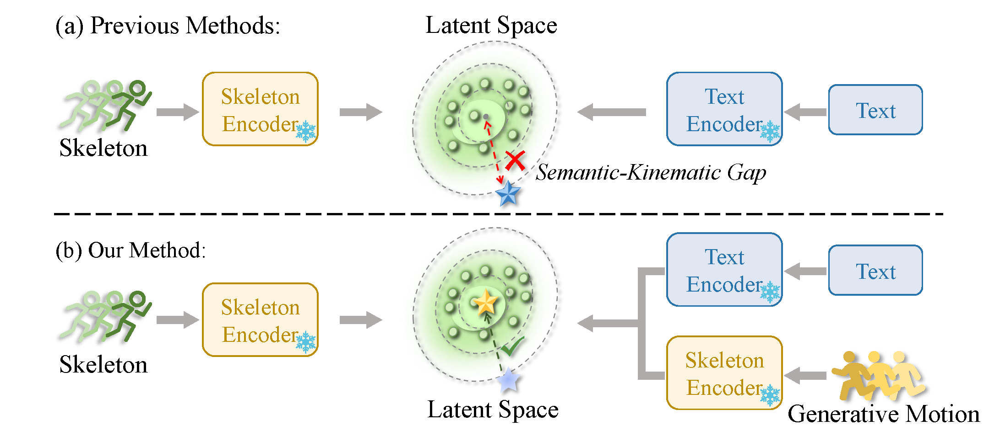
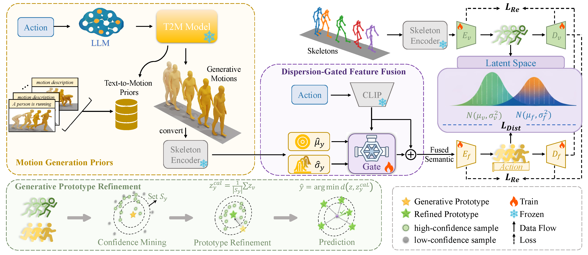
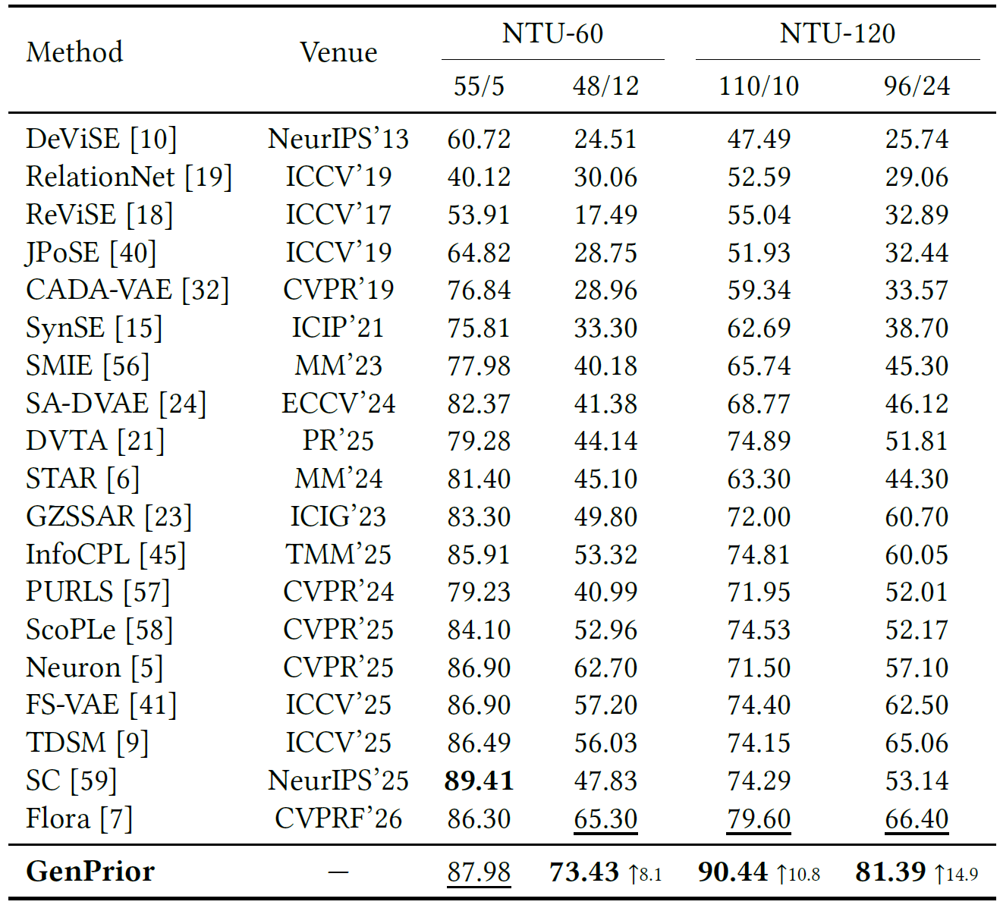
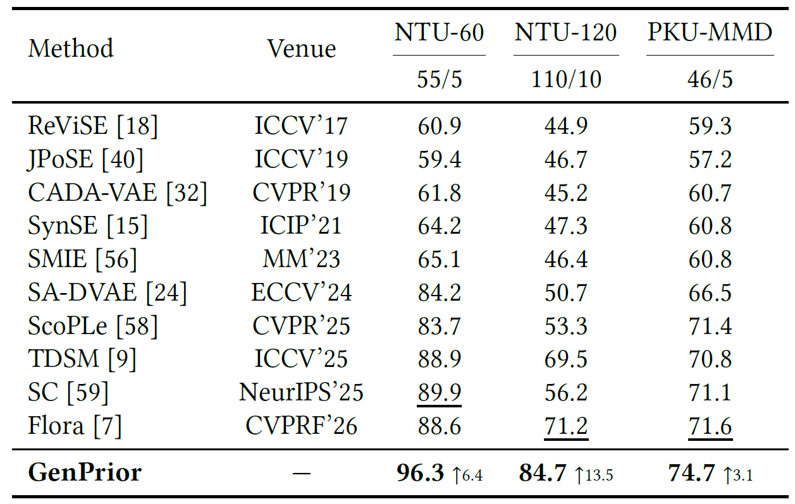
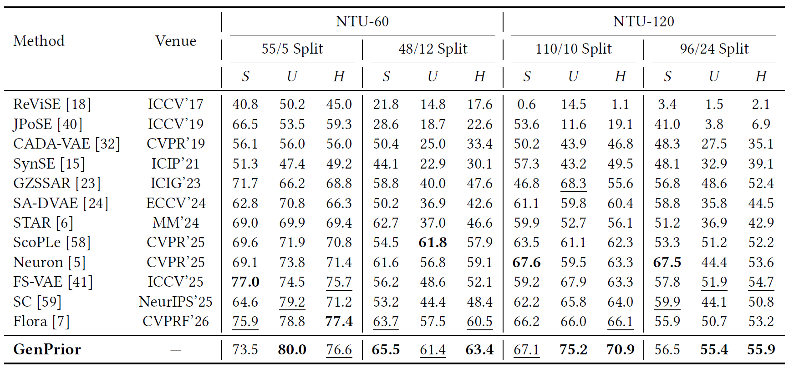
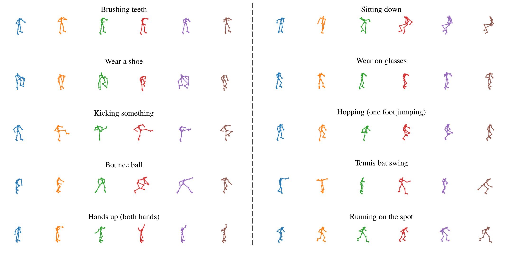

ACM Multimedia 2026
GenPrior: Unleashing Text-to-Motion Generative Priors
for Zero-Shot Skeleton-based Action Recognition
Southeast University
GenPrior distills kinematic structure from generated motions, adaptively injects it into textual semantics, and refines unseen-class prototypes with high-confidence test samples.
Abstract
Zero-shot skeleton-based action recognition (ZSAR) aims to recognize unseen action categories by aligning skeleton features with textual semantics. However, existing methods rely on text-derived prototypes that inherently lack geometric structure and physical constraints, resulting in a pronounced semantic-kinematic gap. To bridge this gap, we propose GenPrior, the first framework to exploit generative priors from pre-trained Text-to-Motion models for ZSAR. Specifically, we introduce dispersion-gated feature fusion, which distills kinematic prototypes and intra-class dispersion from generative motion sequences and employs a learned gating network to adaptively inject reliable structural cues into textual embeddings while suppressing synthetic artifacts. Furthermore, we propose generative prototype refinement, which leverages generation-enhanced prototypes as anchors to mine high-confidence unseen samples, calibrating class prototypes toward the true distribution. Extensive experiments on NTU-60, NTU-120, and PKU-MMD demonstrate state-of-the-art performance under both zero-shot and generalized zero-shot settings.

Framework

Experiments
GenPrior is evaluated on NTU RGB+D 60, NTU RGB+D 120, and PKU-MMD under fixed-split ZSL, random-split ZSL, and generalized ZSL protocols.
Fixed-split zero-shot recognition
Accuracy (%). Gains are against the strongest inductive baseline.

Random-split zero-shot recognition
Mean accuracy (%) over three random splits.

Generalized zero-shot recognition
Seen accuracy (S), unseen accuracy (U), and harmonic mean (H), all in %.

Visual Results
Text-to-motion models provide kinematically grounded cues for action classes that have no labeled skeleton samples. The examples below are generated motions used as priors, not real NTU samples.

BibTeX
If you find GenPrior useful, please cite our work.
@article{kuang2026genprior,
title={GenPrior: Unleashing Text-to-Motion Generative Priors for Zero-Shot Skeleton-based Action Recognition},
author={Kuang, Jidong and Wang, Hongsong and Gui, Jie},
journal={arXiv preprint arXiv:2608.02236},
year={2026}
}